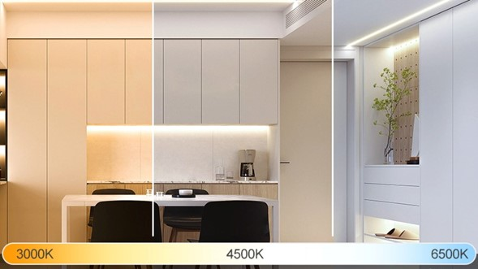
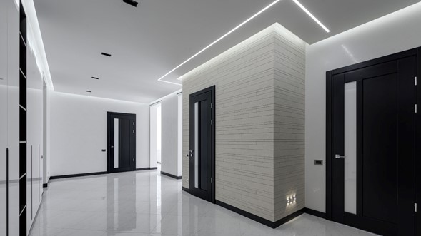

Iluminación inteligente con tiras led , puede llevarte a pensar en las tiras LEDs RGB. Aquellas que pueden ponerse de múltiples colores para decorar un espacio al puro estilo moderno, dando un toque de personalidad especial por ejemplo a tu casa o local comercial.
Pero debes tener en cuenta que existen un tipo de tiras LEDs muy diferentes a estas que pueden ser una gran opción para iluminar tus espacios. Hoy te contamos que son las tiras CCT, para qué sirven y que puedes conseguir instalando iluminación inteligente con tiras leds CCT.
momento. En cambio las tiras CCT no tienen esta funcionalidad. ¿Entonces qué es lo que hace atractiva a este tipo de tiras LEDs?
Las tiras RGB, debido a sus características, es más típico su uso como elemento decorativo que con una funcionalidad propia de iluminación. Ya que no ilumina demasiado la luz que emiten. En cambio, las tiras LEDs CCT pueden funcionar perfectamente como alternativa a bombillas convencionales, tendrás iluminación inteligente con tiras LEDs CCT que darán un toque de modernismo a tu espacio.
Las tiras LEDs CCT sirven para alumbrar grandes espacios debido a su potencial luz. Emiten exclusivamente luz de una calidez entre 2700K – 6500K. Te permiten establecer colores cálidos anaranjados o amarillentos representando un tono natural parecido a la luz solar y tonos fríos como azules y blancos, sin poder acceder al modo color. Justo este motivo es lo que convierte a la iluminación inteligente con tiras LEDs CCT en una buena opción. |
 |
|  |
Con solo varios metros de tira LED CCT puedes alumbrar todo un salón sin necesidad de una lámpara convencional con varias bombillas, o dar un toque de modernidad a tu local comercial sin perder la luz necesaria para desempeñar tu labor.
Además de olvidarte del consumo de varias bombillas, debes tener en cuenta que las tiras LEDs son de bajo consumo y que por lo tanto ¡podrás ahorrar en gasto energético! Pero no solo esto, con estas tiras LEDs al ser dispositivos inteligentes podrás establecer horarios de encendido y apagado o crear automatizaciones para que se enciendan y apaguen solas sin necesidad de hacerlo manualmente, evitando así un gasto extremo por dejar alguna tira LED encendida.
|